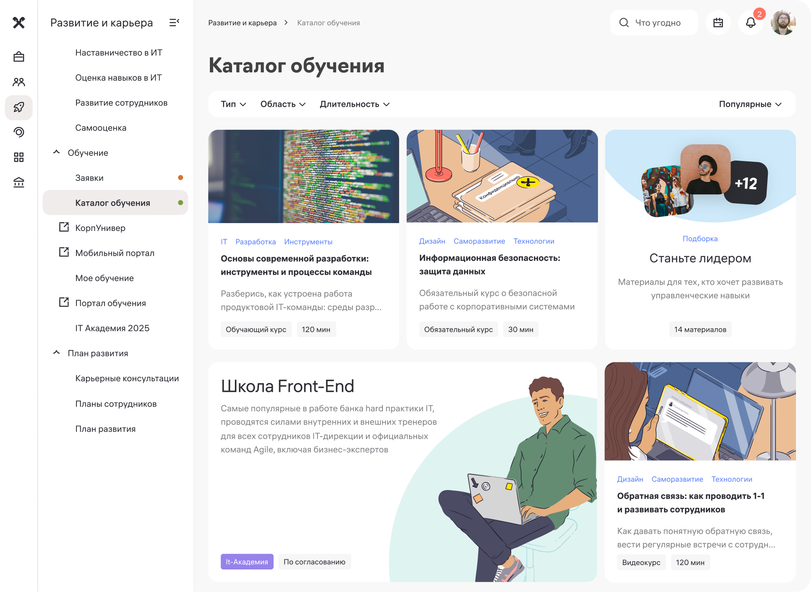
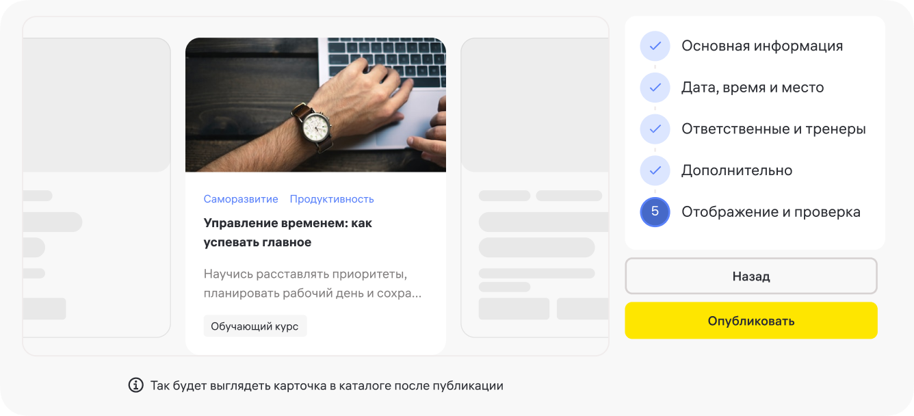

Как исследование повлияло на каталог обучения
Исследование показало, что сотрудники часто узнают об обучении из почтовых рассылок, а образовательные материалы распределены между несколькими системами. При выборе программы людям важны её содержание, продолжительность, формат и возможность применить знания в работе.
Эти выводы нашли отражение в развитии LMS. Один из наиболее показательных примеров — единый каталог обучения.
Мы объединили в нём разные образовательные форматы: курсы, академии, тренинги и другие. Вместо поиска по нескольким системам сотрудники получили общую точку входа.
Категории, фильтры и тематические подборки помогали ориентироваться в материалах, а карточки и страницы программ раскрывали содержание, формат, продолжительность и другие данные.

Каталог нужно наполнить материалами
Для этого мы проектировали не только пользовательские интерфейсы, но и инструменты администрирования. Они позволяли создавать карточки образовательных сущностей, добавлять описания, настраивать параметры и управлять содержимым каталога.
